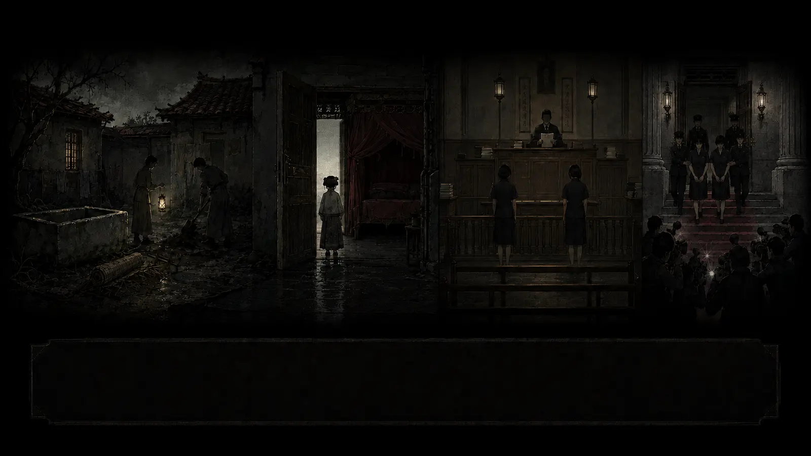
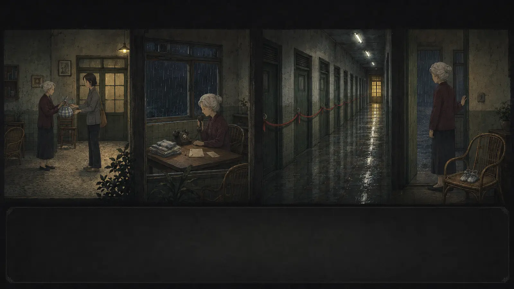
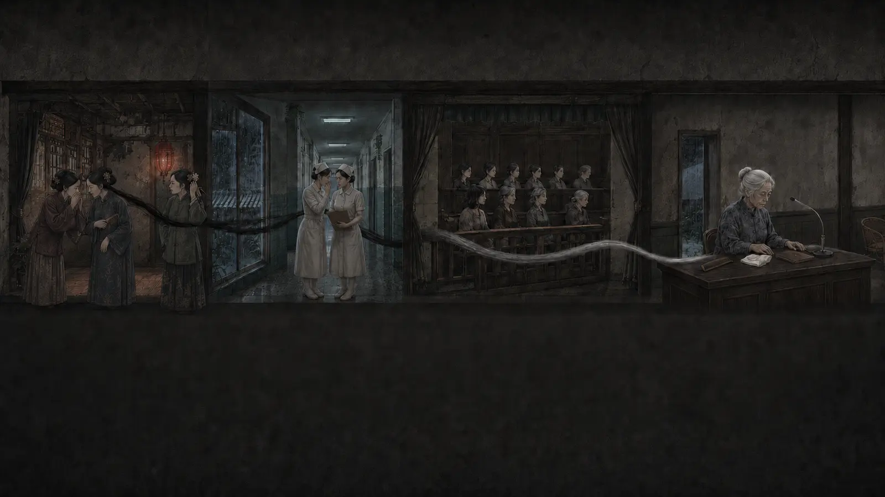
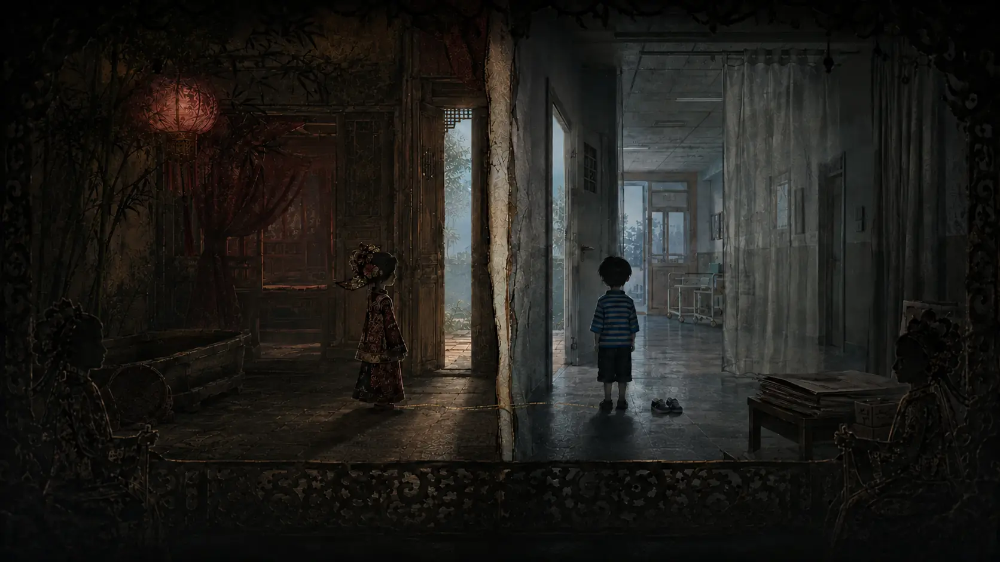
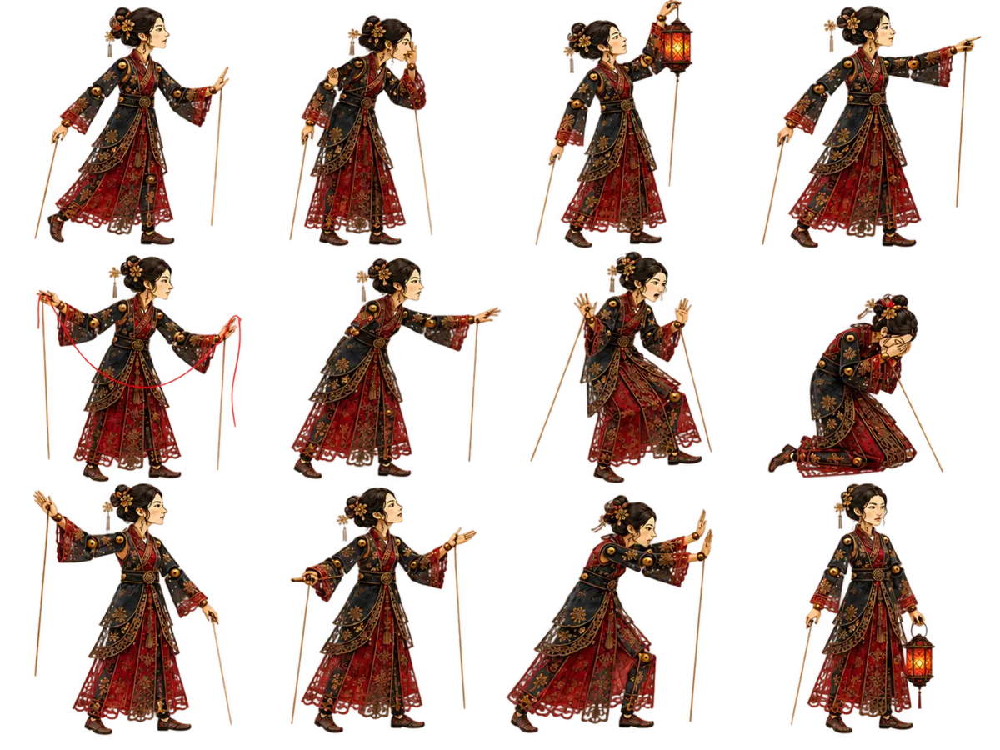
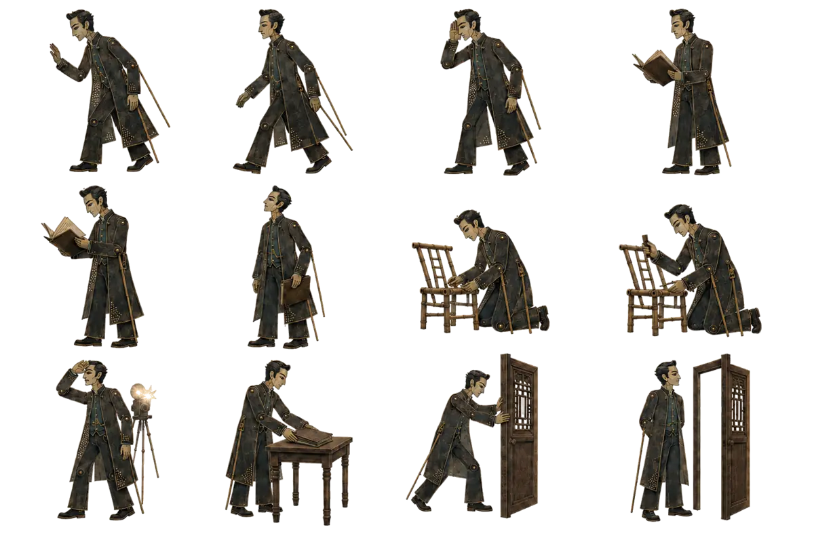
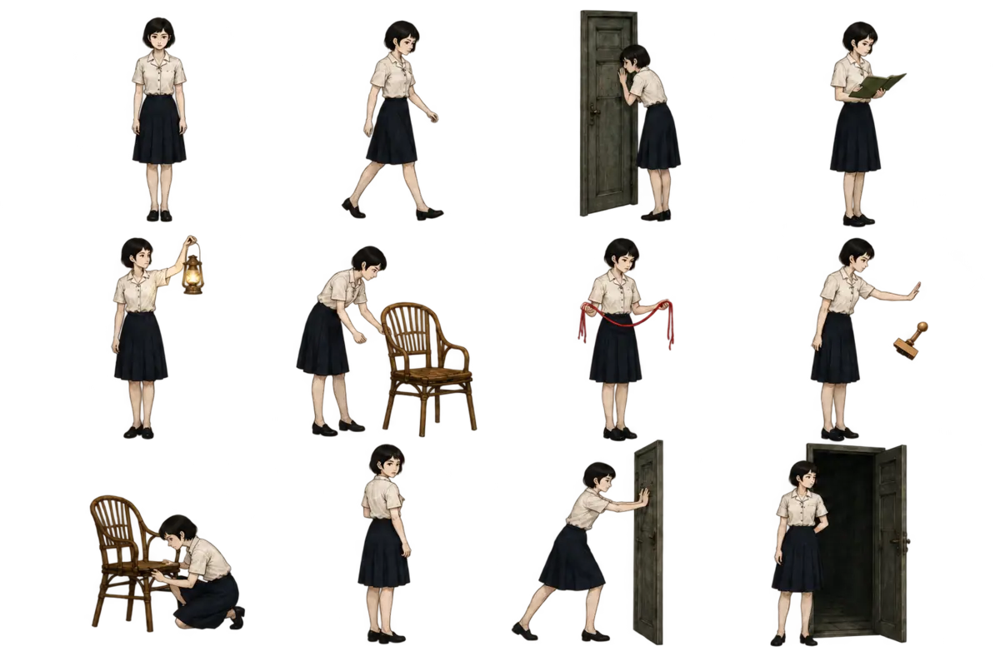
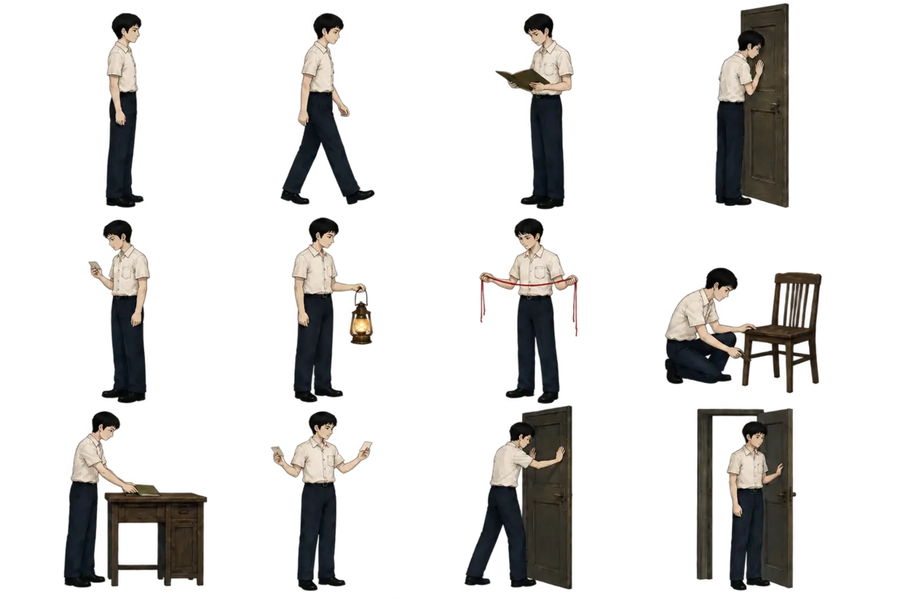

完整文案載入中……
00
文學命題，不取代證據
不是觀看悲傷，
而是辨認門為何沒有更早打開。
十場皮影以成年守門人提出命題；十場原創臺灣陰翳側視劇場觀察物件、程序與交接；四場電影式動畫承接傳說、思念、法庭與跨時空收束。每一段都在進入正文前交還來源牌。
「 今日所讀，是一個仍然有人愛著的孩子，如何在大人各自完整的理由之間，失去他本來應有的明天。
Scene Registry · V7.3 GSAP
二十四部劇，逐場打開
選擇任一場次進入全螢幕劇場。對話框採電玩敘事節奏，但所有介面、人物與場景均為原創；每場包含十個動作節拍與十格分鏡。
Visual Direction
潮濕臺灣空間，
工藝細節與克制的鏡頭。
美術以黛青、煙墨、蟹青、退紅與暖褐為主；人物採2.5D紙纖維關節偶，避免真實肖像。古厝木窗、醫院磨石子、法院木門、竹編、藺草、木雕、剪黏與閩南圓章，共同構成同一條時間長卷。
- 人物
- 十組姿勢、完整無傷、非肖像化
- 鏡頭
- 24mm觀察遠景至50mm物件特寫
- 動作
- 呼吸、回望、停筆、扶椅、核對、開門
- 倫理
- 不重演施虐，不以傷勢製造刺激




Character Performance Bible
不是同一張立繪移動，
而是角色真正表演。
男女皮影與男女守門人各製作十二組全身姿勢。播放器會依每拍文案選用提燈、側耳、翻卷、牽線、扶椅、跪察、回望、推門等動作；每一場的十拍至少使用十個不同姿態。




24
Production Standard
每一場都是一部小型動畫片。
十拍動作
每場固定十個可驗收的姿勢與動作節拍，不以單張圖反覆淡入取代表演。
遊戲式對話
說話者、逐句文字、上一句／下一句、播放與完整逐字稿皆為可存取HTML。
GSAP多層分鏡
前景工藝物、中景人物、後景空間與光影分離，由時間軸同步2.5D推鏡、橫移與焦點轉換。
尊重界線
急診停在簾外，外婆不被追拍，兒童維持完整無傷，查證標籤不因戲劇而消失。
Copy × Cinema · V7.3
完整文案與動畫，
在章節裡彼此照應。
二十四部動畫依敘事位置分布於序章、八篇正文與終章；讀到相關段落即可開啟十拍劇場。正文採玄青、黛藍、天水碧、月白、朱砂、胭脂、赭石與宣紙色，並以十二枚閩南工藝圖章作大型半透明水印。
讓下一扇門更早打開
記住他，不只是記住一場悲劇。
願下一個孩子，在傷害發生以前，就有人伸手接住。
通報不是司法定罪；先描述可觀察到的事實，讓專業人員評估與介入。